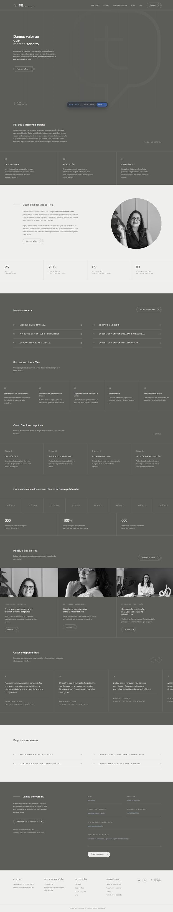

IDEIA 01

passe o mouse para percorrerDireta
Feita no estilo do cdn.com.br
Fundo escuro na maior parte da página e uma frase curta e forte logo no começo. É a mais densa e a mais parecida com site de empresa grande.
- Menu fino e escuro no topo
- Serviços numerados, cada um abre quando você clica
- Blocos que ocupam a tela toda, de ponta a ponta
- Sua foto em círculo, na parte que fala de você